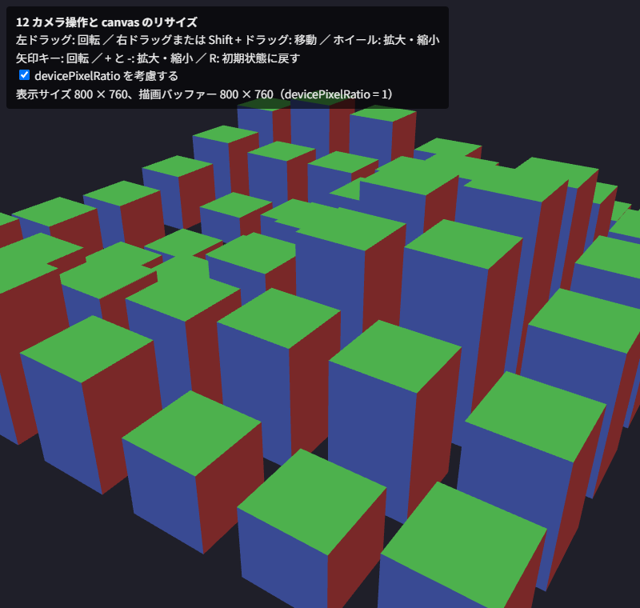

11. インタラクション
この章では、マウスやキーボードでカメラを操作する方法と、canvas をウィンドウの大きさに合わせる方法を説明します。また、マウスで指した物体を特定するピッキングの考え方を紹介します。
11.1. 注視点を回るカメラ
3D のビューアーでよく使われるのが、注視点のまわりをカメラが回る操作方法です（オービットカメラ）。カメラの状態を、注視点 \(\mathbf{t}\)、注視点からの距離 \(d\)、水平方向の角度（方位角）\(\phi\)、垂直方向の角度（仰角）\(\theta\) で表すと、視点の位置 \(\mathbf{e}\) は次の式で求められます。
マウスのドラッグで \(\phi\) と \(\theta\) を、ホイールで \(d\) を変化させ、求めた視点と注視点から mat4.lookAt でビュー行列を作ります。
仰角 \(\theta\) が ±90 度に達すると、視線の方向とカメラの上方向の目安 (0, 1, 0) が平行になり、lookAt でカメラの右方向を求められなくなります（第 7 章）。そのため、仰角は ±90 度よりわずかに小さい範囲に制限します。
11.2. ポインターイベント
マウスの操作は、ポインターイベントで受け取ります。ポインターイベントはマウス、タッチ、ペンを同じ方法で扱えます。
イベント |
用途 |
|---|---|
|
ドラッグの開始。押されたボタン（ |
|
ドラッグ中の移動。前回の位置との差に応じてカメラを動かします |
|
ドラッグの終了 |
|
ホイールの回転。 |
|
右クリックのメニュー。右ドラッグを使う場合は |
|
キーボードの入力。 |
pointerdown で canvas.setPointerCapture(event.pointerId) を呼ぶと、ドラッグ中にポインターが canvas の外に出てもイベントを受け取り続けられます。また、タッチ操作でページがスクロールしないように、canvas の CSS に touch-action: none を指定します。
wheel イベントの既定の動作はページのスクロールなので、preventDefault で止めます。このとき、addEventListener の第 3 引数に { passive: false } を指定する必要があります。
サンプルで使っているカメラ操作の関数を次に示します。
288// ---- マウスとキーボードによるカメラ操作（第 11 章） ----
289// 注視点 target のまわりを、距離 distance、方位角 yaw、仰角 pitch で回るカメラ
290function createOrbitCamera(canvas, initial) {
291 const camera = { ...initial, target: [...initial.target] };
292 let dragging = null; // ドラッグ中のボタンと直前のポインター位置
293
294 canvas.addEventListener("pointerdown", (event) => {
295 dragging = { button: event.button, shift: event.shiftKey, x: event.clientX, y: event.clientY,
296 startX: event.clientX, startY: event.clientY };
297 canvas.setPointerCapture(event.pointerId); // canvas の外に出てもイベントを受け取る
298 });
299 canvas.addEventListener("pointermove", (event) => {
300 if (!dragging) {
301 return;
302 }
303 const dx = event.clientX - dragging.x;
304 const dy = event.clientY - dragging.y;
305 dragging.x = event.clientX;
306 dragging.y = event.clientY;
307 if (dragging.button === 2 || dragging.shift) {
308 // 右ドラッグまたは Shift + ドラッグ: 注視点を画面と平行に移動する
309 const scale = camera.distance * 0.0015;
310 const right = [Math.cos(camera.yaw), 0, -Math.sin(camera.yaw)];
311 camera.target[0] -= right[0] * dx * scale;
312 camera.target[2] -= right[2] * dx * scale;
313 camera.target[1] += dy * scale;
314 } else {
315 // 左ドラッグ: 注視点のまわりを回る
316 camera.yaw -= dx * 0.01;
317 camera.pitch += dy * 0.01;
318 }
319 clampCamera(camera);
320 });
321 canvas.addEventListener("pointerup", () => {
322 dragging = null;
323 });
324 // 右クリックのメニューを表示しない
325 canvas.addEventListener("contextmenu", (event) => event.preventDefault());
326 // ホイール: 近づく・遠ざかる
327 canvas.addEventListener("wheel", (event) => {
328 event.preventDefault();
329 camera.distance *= Math.exp(event.deltaY * 0.001);
330 clampCamera(camera);
331 }, { passive: false });
332 // キーボード: 矢印キーで回転、+ / - で拡大・縮小、R で初期状態に戻す
333 window.addEventListener("keydown", (event) => {
334 const step = 0.05;
335 switch (event.key) {
336 case "ArrowLeft": camera.yaw += step; break;
337 case "ArrowRight": camera.yaw -= step; break;
338 case "ArrowUp": camera.pitch += step; break;
339 case "ArrowDown": camera.pitch -= step; break;
340 case "+": case ";": camera.distance *= 0.9; break;
341 case "-": camera.distance /= 0.9; break;
342 case "r": case "R": Object.assign(camera, { ...initial, target: [...initial.target] }); break;
343 default: return;
344 }
345 event.preventDefault();
346 clampCamera(camera);
347 });
348 return camera;
349}
350
351// 真上・真下を越えないように仰角を制限し、距離も一定の範囲に収める
352function clampCamera(camera) {
353 const limit = Math.PI / 2 - 0.01;
354 camera.pitch = Math.min(limit, Math.max(-limit, camera.pitch));
355 camera.distance = Math.min(50, Math.max(1, camera.distance));
356}
357
358// カメラの状態から視点の位置を求める
359function cameraEye(camera) {
360 const cosPitch = Math.cos(camera.pitch);
361 return [
362 camera.target[0] + camera.distance * cosPitch * Math.sin(camera.yaw),
363 camera.target[1] + camera.distance * Math.sin(camera.pitch),
364 camera.target[2] + camera.distance * cosPitch * Math.cos(camera.yaw),
365 ];
366}
ドラッグ量からの角度の計算（ピクセルあたり 0.01 ラジアン）や、ホイールによる距離の変化（Math.exp を使い、近いときほど細かく動く）の係数は、操作感を見ながら調整してください。
11.3. canvas の大きさを表示に合わせる
第 3 章で説明したように、canvas には描画バッファーの大きさと表示サイズがあります。canvas をウィンドウ全体に広げる場合、CSS で表示サイズを指定し、描画バッファーの大きさを JavaScript で表示サイズに合わせます。
高 DPI ディスプレイへの対応
高解像度のディスプレイでは、CSS の 1 ピクセルが、物理的な複数のピクセルで表示されます。その倍率は window.devicePixelRatio で取得できます（例えば 2 なら、CSS の 1 ピクセルが縦横 2 × 2 の物理ピクセルに当たります）。描画バッファーを CSS の表示サイズと同じにすると、表示の際に拡大されてぼやけるため、表示サイズに devicePixelRatio を掛けた大きさにします。
369// CSS 上の表示サイズ × devicePixelRatio を描画バッファーの大きさにする。
370// 大きさが変わったときは true を返す
371function resizeCanvasToDisplaySize(canvas) {
372 const ratio = window.devicePixelRatio || 1;
373 const width = Math.round(canvas.clientWidth * ratio);
374 const height = Math.round(canvas.clientHeight * ratio);
375 if (canvas.width !== width || canvas.height !== height) {
376 canvas.width = width;
377 canvas.height = height;
378 return true;
379 }
380 return false;
381}
この関数を毎フレームの描画の最初に呼び出し、続けて gl.viewport と投影行列の縦横比も描画バッファーの大きさに合わせます。resize イベントで処理する方法もありますが、毎フレーム確認する方法は、ウィンドウの大きさ以外の理由（CSS のレイアウトの変化など）で表示サイズが変わった場合にも対応できます。
devicePixelRatio が 2 の環境では、描画するピクセル数が 4 倍になります。フラグメントシェーダーの処理が重い場合は、性能とのバランスを考えて倍率に上限を設けることも検討してください（第 14 章）。
11.4. サンプル
12_camera_control.html は、ウィンドウ全体に広げた canvas に、高さの異なる立方体を 7 × 7 個並べて表示します。マウスとキーボードで、表 11.2 の操作ができます。
操作 |
動作 |
|---|---|
左ドラッグ、矢印キー |
注視点のまわりを回ります |
右ドラッグ、Shift + 左ドラッグ |
注視点を画面と平行に移動します |
ホイール、 |
注視点に近づく・遠ざかります |
|
初期状態に戻します |
左上には、canvas の表示サイズと描画バッファーの大きさを表示します。「devicePixelRatio を考慮する」をオフにすると、高 DPI ディスプレイでは表示がぼやけることを確認できます。

図 11.1 12_camera_control.html の実行結果
11.5. ピッキング
マウスでクリックした位置にある物体を特定することをピッキングと呼びます。主な方法は 2 つあります。
レイキャスト: クリックした位置から視線の方向に伸びる半直線（レイ）を求め、各物体との交差を JavaScript で計算します。投影行列とビュー行列の逆行列が必要で、物体の形状ごとに交差判定を実装する必要があります。
色による ID 方式: 物体ごとに固有の色（ID を色に変換したもの）を決めておき、画面に表示しないフレームバッファーに、その色で物体を塗りつぶして描画します。クリックした位置のピクセルの色を
gl.readPixelsで読み取れば、その色から物体の ID が分かります。
色による ID 方式は、どのような形状でも GPU の描画結果をそのまま使えるため、実装が簡単です。ID は、例えば次のように RGB の 3 バイトに分けて色にします（ID が 0 の黒は「物体なし」を表します）。
552function idToColor(id) {
553 return [(id & 0xff) / 255, ((id >> 8) & 0xff) / 255, ((id >> 16) & 0xff) / 255, 1];
554}
555
556function colorToId(pixel) {
557 return pixel[0] | (pixel[1] << 8) | (pixel[2] << 16);
558}
この方法には、画面に表示しないフレームバッファーが必要です。フレームバッファーは次の章で説明し、ピッキングの実装は第 13 章の総合演習で行います。